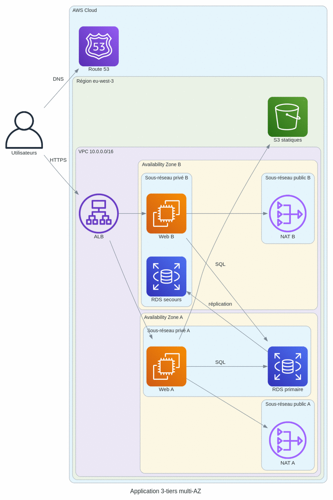
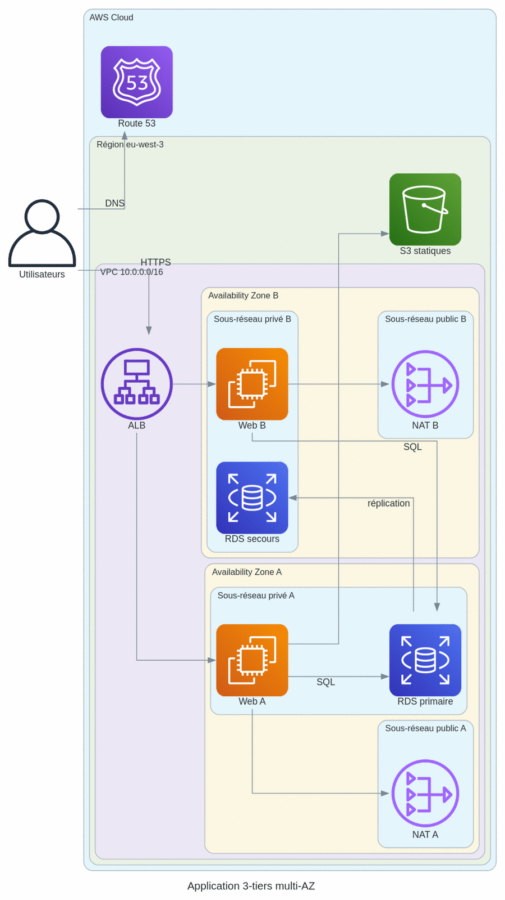
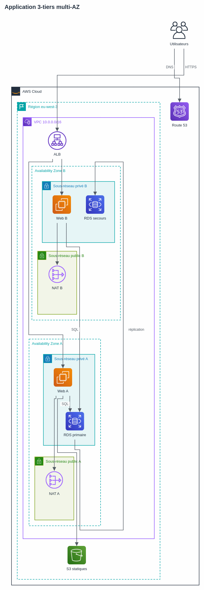
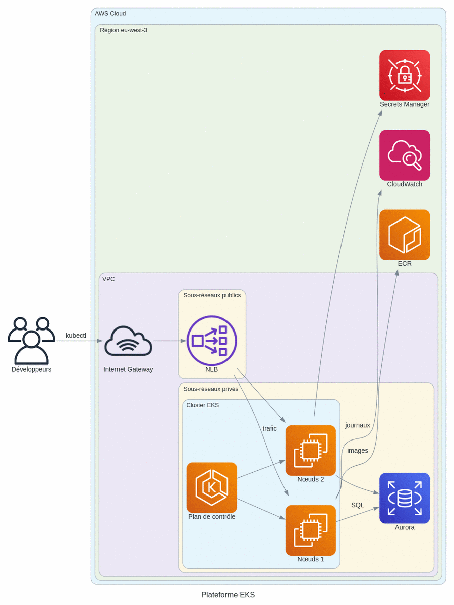
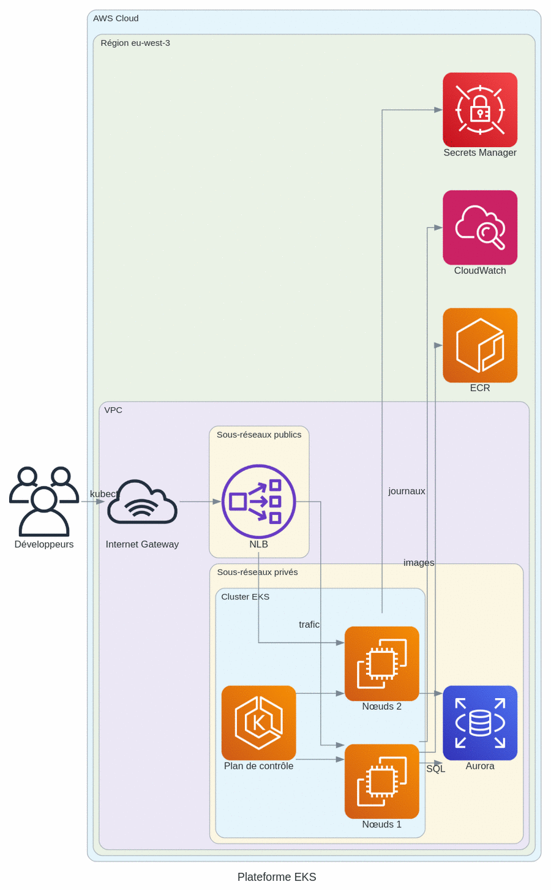
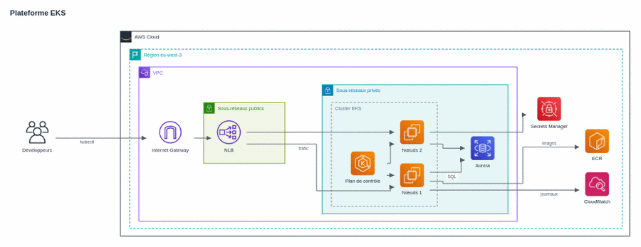
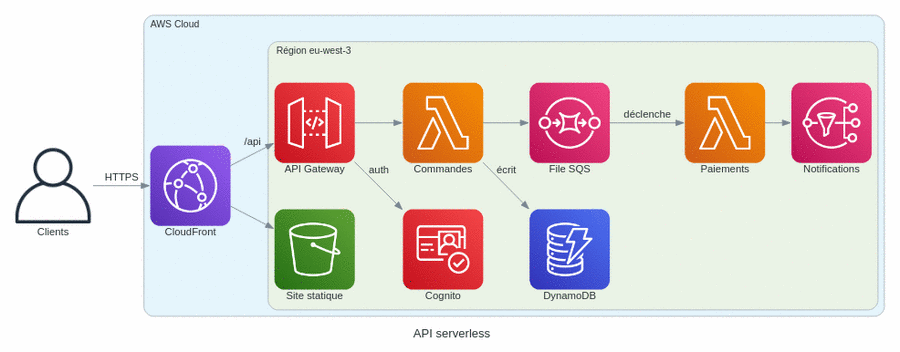
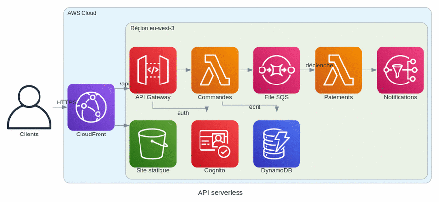
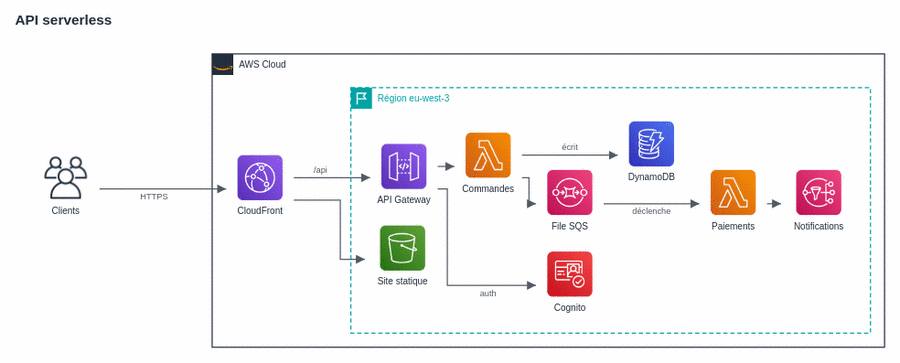
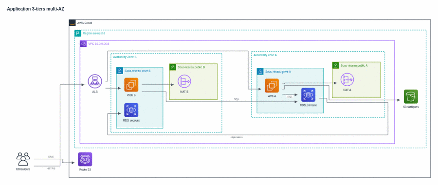

Le schéma AWS cadré — essai du 2026-11-02
Trois schémas types rendus trois fois avec la même description : aujourd'hui (Graphviz, liaisons
spline, réglage SF-142-17), Graphviz splines=ortho, et le prototype ELK
(liaisons orthogonales, zones aux conventions AWS). Le prototype n'a pas encore la composition des zones
(Availability Zones côte à côte et symétriques) : c'est l'objet de SF-238-03. Garde automatique : nombre de segments de
liaison obliques ou courbes.
| Schéma | Aujourd'hui (spline) | Graphviz ortho | Prototype ELK |
|---|---|---|---|
| 3-tiers multi-AZ | 12 / 15 non orthogonaux | 0 / 19, étiquettes décollées | 0 / 34 |
| EKS | 21 / 23 | 0 / 19, étiquettes décollées | 0 / 27 |
| Serverless | 4 / 9 | 0 / 13, liaisons qui finissent dans le vide | 0 / 15 |
3-tiers multi-AZ



EKS



Serverless



Pourquoi une couche de composition des zones
